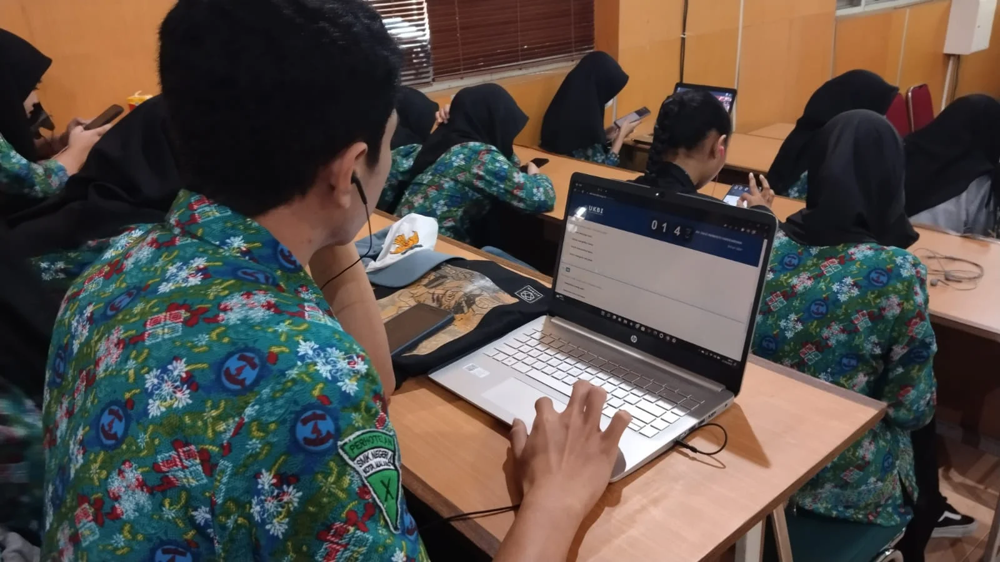
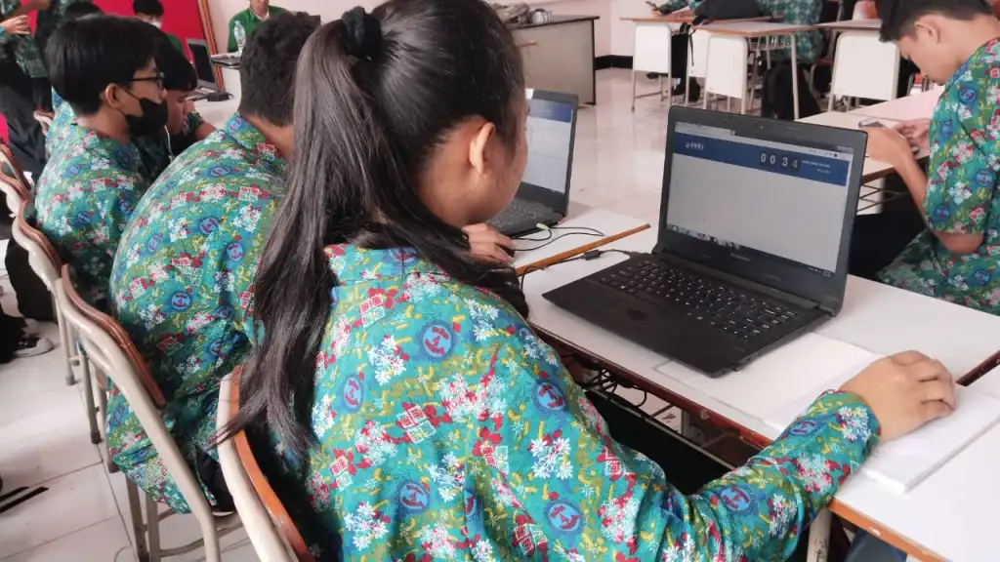
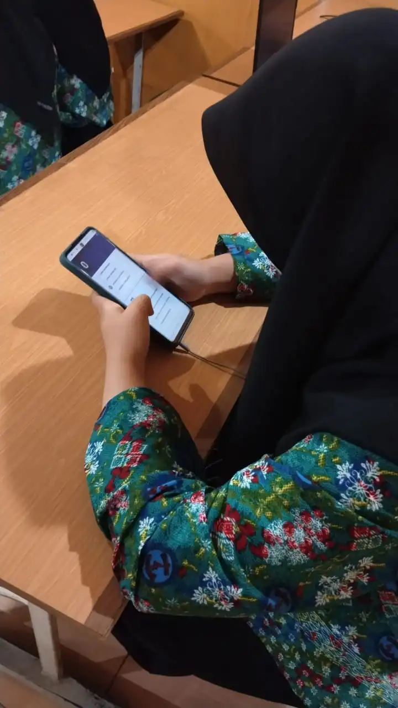
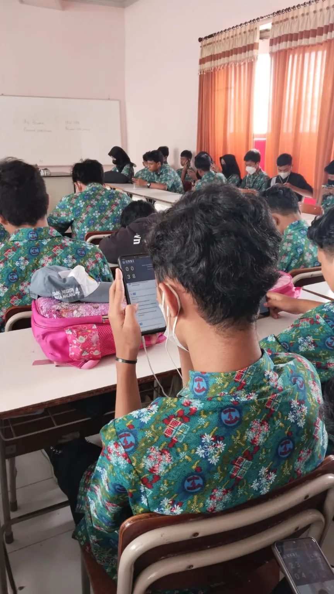

Studi Tiru SMK Negeri 5 Yogyakarta, SMKN 3 Sidrap – Sulsel, SMKN 4 Jember dan SMKN 1 Kutalimbaru – Sumut
UKBI adalah sarana uji untuk mengukur kemahiran seseorang dalam berbahasa Indonesia lisan atau tulis sebagaimana dikutip dalam laman web ukbi.kemdikbud.go.id. UKBI terdiri atas lima seksi, yaitu Seksi I (Mendengarkan), Seksi II (Merespons Kaidah), dan Seksi III (Membaca) dalam bentuk soal pilihan ganda serta Seksi IV (Menulis) dalam bentuk presentasi tulis dan Seksi V (Berbicara) dalam bentuk presentasi lisan.
Materi UKBI meliputi empat kemahiran berbahasa, yaitu mendengarkan, membaca, menulis, dan berbicara. Selain itu, UKBI juga mengujikan kaidah bahasa Indonesia. Kelima materi tersebut disajikan ke dalam lima seksi pengujian, yaitu Seksi I Mendengarkan, Seksi II Merespons Kaidah, Seksi III Membaca, Seksi IV Menulis, dan Seksi V Berbicara.
Hasil UKBI peserta uji dipetakan ke dalam tujuh peringkat, predikat, dan rentang skor. Ketujuh predikat dapat diserangkaikan dalam satu ungkapan Isu Unggul Managitas (Istimewa, Sangat Unggul, Unggul, Madya, Semenjana, Marginal, dan Terbatas). Peringkat dan predikat UKBI tersebut dideskripsikan sebagai berikut.
Predikat I Istimewa (Skor 725-800) Predikat ini menunjukkan bahwa peserta uji memiliki kemahiran yang sempurna dalam berkomunikasi dengan menggunakan bahasa Indonesia, baik lisan maupun tulis. Dengan kemahiran ini yang bersangkutan tidak memiliki kendala dalam berkomunikasi untuk keperluan personal, sosial, keprofesian.
 Predikat II Sangat Unggul (Skor 641-724) Predikat ini menunjukkan bahwa peserta uji memiliki kemahiran yang sangat tinggi dalam berkomunikasi dengan menggunakan bahasa Indonesia, baik lisan maupun tulis. Dengan kemahiran ini yang bersangkutan tidak memiliki kendala dalam berkomunikasi untuk keperluan sintas, sosial, dan keprofesian. Untuk kepentingan akademik yang kompleks, yang bersangkutan masih memiliki kendala.
Predikat III Unggul (Skor 578 -640) Predikat ini menunjukkan bahwa peserta uji memiliki kemahiran yang sangat memadai dalam berkomunikasi dengan menggunakan bahasa Indonesia, baik lisan maupun tulis. Dengan kemahiran ini yang bersangkutan tidak memiliki kendala dalam berkomunikasi untuk keperluan sintas dan sosial. Peserta juga tidak terkendala dalam berkomunikasi untuk keperluan keprofesian, baik keprofesian yang sederhana maupun kompleks.
Predikat IV Madya (Skor 482 – 577) Predikat ini menunjukkan bahwa peserta uji memiliki kemahiran yang memadai dalam berkomunikasi dengan menggunakan bahasa Indonesia, baik lisan maupun tulis. Dengan kemahiran ini yang bersangkutan mampu berkomunikasi untuk keperluan sintas dan kemasyarakatan dengan baik, tetapi masih mengalami kendala dalam hal keprofesian yang kompleks.
Predikat V Semenjana (Skor 405 – 481) Predikat ini menunjukkan bahwa peserta uji memiliki kemahiran yang cukup memadai dalam berkomunikasi dengan menggunakan bahasa Indonesia, baik lisan maupun tulis. Dalam berkomunikasi untuk keperluan keilmiahan, yang bersangkutan sangat terkendala. Untuk keperluan keprofesian dan kemasyarakatan yang kompleks, yang bersangkutan masih mengalami kendala, tetapi tidak terkendala untuk keperluan keprofesian dan kemasyarakatan yang tidak kompleks.
Predikat VI Marjinan (Skor 326 – 404) Predikat ini menunjukkan bahwa peserta uji memiliki kemahiran yang tidak memadai dalam berkomunikasi dengan menggunakan bahasa Indonesia, baik lisan maupun tulis. Dalam berkomunikasi untuk keperluan kemasyarakatan yang sederhana, yang bersangkutan tidak mengalami kendala. Akan tetapi, untuk keperluan kemasyarakatan yang kompleks, yang bersangkutan masih mengalami kendala. Hal ini berarti yang bersangkutan belum siap berkomunikasi untuk keperluan keprofesian, apalagi untuk keperluan keilmiahan.
Predikat VII Marjinan (Skor 251 – 325) Predikat ini menunjukkan bahwa peserta uji memiliki kemahiran yang sangat tidak memadai dalam berkomunikasi dengan menggunakan bahasa Indonesia, baik lisan maupun tulis. Dengan kemahiran ini peserta uji hanya mampu berkomunikasi untuk keperluan sintas. Pada saat yang sama, predikat ini juga menggambarkan bahwa potensi yang bersangkutan dalam berkomunikasi masih sangat besar kemungkinannya untuk ditingkatkan.
Terdapat beberapa hal yang perlu untuk diperhatikan berkaitan dengan bagaimana calon peserta tes UKBI yang pertama adalah Calon peserta tes dapat mendaftar tes secara mandiri pada laman ukbi.kemdikbud.go.id., kedua Pendaftaran tes UKBI dapat dilakukan secara kolektif dengan jumlah peserta minimal 100 orang. Pendaftaran kolektif dilakukan oleh koordinator di instansi masing-masing. Calon peserta wajib mengunggah pasfoto dan kartu identitas pada akun uji paling lambat 2 hari kerja sebelum pelaksanaan uji. Sesuai dengan Peraturan Pemerintah No. 82 Tahun 2016 tentang Jenis dan Tarif PNBP di Lingkungan Kemdikbud, biaya tes UKBI terbagi atas tiga kategori, yaitu mahasiswa Rp135.000,00, umum Rp300.000,00, dan warga negara asing Rp1.000.000,00.
Sebagaimana hal tersebut di atas dalam rangka mendukung program ANBK serta meningkatkan kemampuan literasi bagi siswa kelas X dan XI SMK Negeri 4 Malang berjumlah lebih dari 1500 siswa dilaksanakan pada tanggal 30 November sampai dengan 1 November 2022, bertempat di Ruang Auditorium dan Ruang Inkubator Bisnis dimulai pada pukul 07.00 sampai dengan pukul 15.00 WIB.